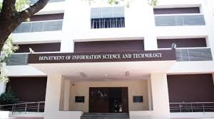
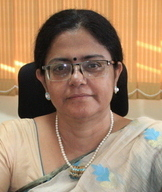

ANNA UNIVERSITY
Home
Map
Details
About Anna Univeristy
Contact
Student Registration
DEPARTMENT OF INFORMATION SCIENCE AND TECHNOLOGY
Anna University is a leading technical university in India located at Chennai, Tamil Nadu. Department of Information Science and Technology (IST) is carved out of the Department of Computer Science and Engineering in May 2010. The Department functions under the Faculty of Information and Communication Engineering. Dr. Saswati Mukherjee is currently the Head of the Department. IST functions as one of the University Departments having academic autonomy of having its own syllabus and curriculum. It offers undergraduate, postgraduate and research programmes in various disciplines of Information Technology, Multimedia Technology and Master of Computer Application Degree Programme.

The ITE Department Building
In addition, the Department conducts CISCO Ceritified CCNA Programme for Engineering Graduates. Anna University is one of the Regional Academy which offer CCNA Exploration & Discovery Training programme for the Local Academies Instructors and students.

HOD- Dr.Saswati Mukherjee